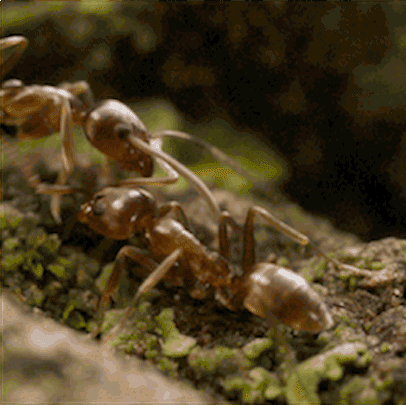
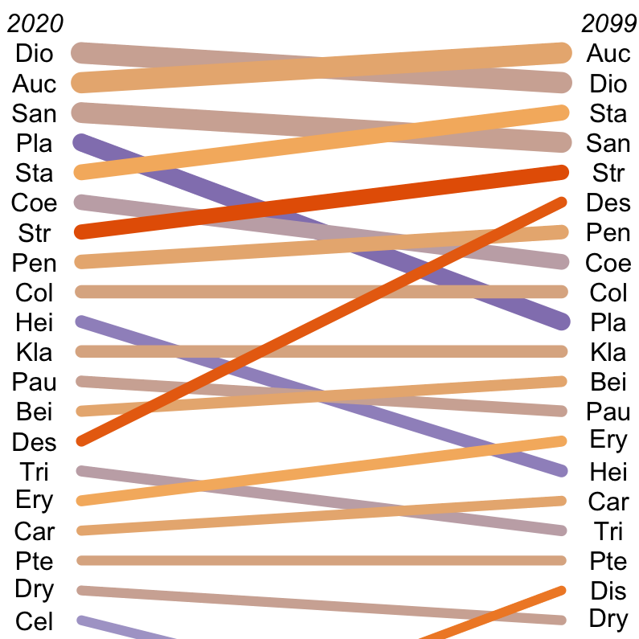

- About
- Research
- Data & Code
- Media
[ EN / DE ]
Code

R Package: Mast Inference and Forecasting (MASTIF)
MASTIF probabilistically estimates the seed production and dispersal of trees given seed trap data and tree locations. The model builds on the rich literature of seed dispersal models that employ a bivariate Student’s t (2Dt) by accommodating for uncertainty in seed assignment, modeling maturition status for unknown trees, and explicitly describing the space-time covariance structure of seed production between trees. Our publication outlining the model and the theory behind it can be found here, and supplementary material can be found here.After downloading here, install it by calling the following in R:
install.packages('mastif_1.0.tar.gz',repos=NULL, type='source')
library('mastif')
Help and documentation here:
help('mastif')
browseVignettes('mastif')

Python Package: geeDataExtract
The python package geeDataExtract exploits the command line and Google Earth Engine's vast Environmental Covariate database to pull down a wide variety of data over space and time. You can use this package with the workflow below (Pull Google Earth Engine Environmental Covariates for points without ArcGIS)Download package here.
Python Package Citation:
Schwantes, Amanda M., Núñez, Chase L. (2019). geeDataExtract. Python package version 0.0.1.
Workflow: Pull Google Earth Engine Environmental Covariates for points (without ArcGIS)
Google Earth Engine offers a tremendous open resource to environmental scientists but requires a bit of coding, and often at least a few hours in (the very expensive) ArcGIS. Here is a way to skip Arc all together, taking you from start to download using only R, the command line, and an internet browser.- 
R Package: Generalized Joint Attribute Model (GJAM)
GJAM was developed to resolve some of the main challenges for ecological forecasting with biodiversity data. i) data are multivariate, ii) they are observed on different scales, and iii) they are mostly zeros. Probabilistic inference in GJAM admits data with disparate scales and massive zero inflation. That is, data are often collected in different ways, and species observations are a rare occurrence. By avoiding the distortion of scales implemented in generalized linear models, GJAM estimates can be interpreted on the scale of the observations, accounting for sample effort. Explanation of model structure can be found here. Original manuscript can be found here.Install it by calling the following in R:
install.packages('gjam')
library('gjam')
Get help and documentation by calling the following in R:
help('gjam')
browseVignettes('gjam')
Workflow: Fitting Model of Wild Elephant Gut Passage Time and Seed Dispersal Distances
Accurate estimation of gut passage time, from ingestion to defecation, is essential for understanding vertebrate-mediated ecological processes, such as seed dispersal. Here is a workflow fitting a model of gut passage time and applying it spatially to infer seed dispersal density.
Function: Arrow Plots
For displaying ordered mean difference among multiple groups. In this example, I am plotting the mean difference in probability of presence for tree species in the country of Gabon.{kind=link}
- 
Function: Tangle Plots
Plotting change in relative rank over time. An adaptation of previous code, Tangle plots colors and weights horizontal n lines between n vertical timepoints based on the total change.{kind=link}
Data
Ecological and social pressures interfere with homeostatic sleep regulation in the wild;
Loftus JC, Harel R, Núñez CL, Crofoot MC;
DOI: 10.5061/dryad.p5hqbzkqf;
DYRAD
Ecological factors influence balancing selection on leaf chemical profiles of a wildflower;
Carley LN, ..., Núñez CL, et al.;
DOI: 10.5061/dryad.7h44j0zsr;
DYRAD
Boechera stricta raw sequence reads of CFR;
Carley LN, ..., Núñez CL, et al.;
Accession: PRJNA659863
ID: 659863
NCBI
Boechera stricta long-read genome assembly;
Carley LN, ..., Núñez CL, et al.;
Accession: PRJNA609209
ID: 609209
NCBI
Continent-wide tree fecundity driven by indirect climate effects;
B Courbaud, ..., Núñez CL, et al.;
CRID: 1360861294726010368
DOI: 10.7924/r4348ph5t
Research Data Repository, Duke University